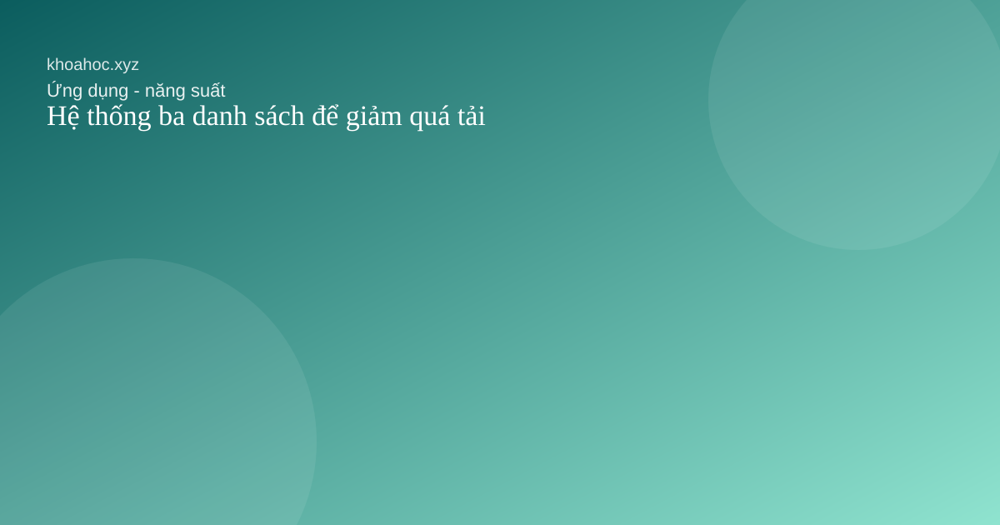
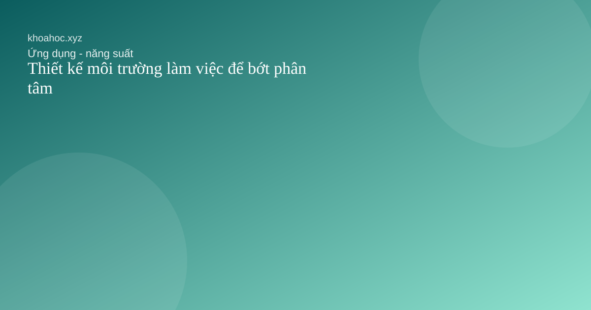

Ghi chú như một bộ não thứ hai
Một hệ thống ghi chú tốt không chỉ lưu trữ mà còn giúp suy nghĩ lại và kết nối ý tưởng.
Một hệ thống ghi chú tốt không chỉ lưu trữ mà còn giúp suy nghĩ lại và kết nối ý tưởng.

Tách việc phải làm thành ba lớp giúp đầu óc bớt hỗn loạn hơn rất nhiều.
Một kỹ thuật đơn giản nhưng hữu ích vì nó làm việc bắt đầu dễ hơn và nghỉ ngơi có chủ đích hơn.
Một buổi nhìn lại ngắn mỗi tuần có thể giúp bạn tránh trôi theo bận rộn mà quên mất hướng đi.

Môi trường xung quanh thường quyết định ta có giữ được nhịp làm việc hay không.